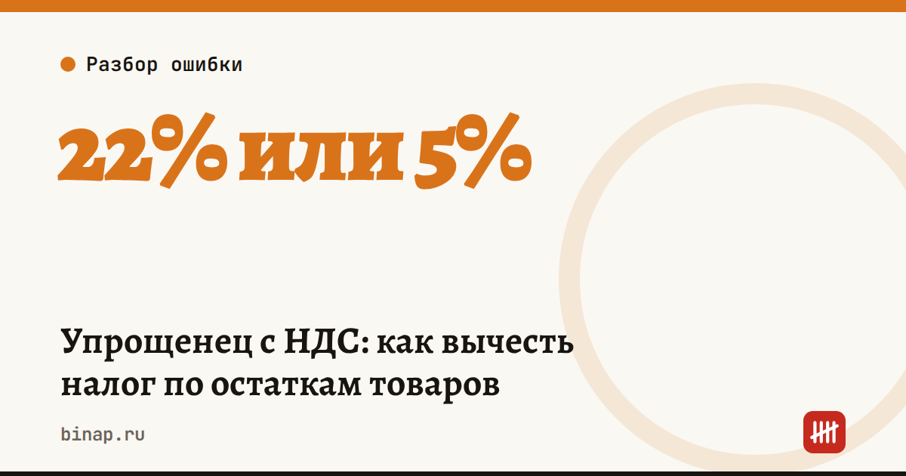

Упрощенец с НДС: как вычесть налог по остаткам товаров

Упрощенец перестаёт быть освобождённым от НДС, как только доход превысил 20 млн ₽. Товар, закупленный ещё «без НДС», потом продаётся уже с налогом. Можно ли вычесть входной НДС по этим остаткам — зависит от выбранной ставки: при общей ставке 22% — можно, при специальной 5% или 7% — нет.
Коротко
- В 2026 году упрощенец освобождён от НДС, если доход за 2025 год не больше 20 млн ₽ (ст. 145 НК).
- Превысили 20 млн ₽ в течение года — НДС с 1-го числа следующего месяца: превышение в августе — налог с 1 сентября.
- Ставку выбираете сами: общую 22% (10% для льготных товаров) с вычетами или специальную 5% или 7% без вычетов.
- При общей ставке НДС по остаткам, купленным до утраты освобождения, можно принять к вычету (абз. 2 п. 8 ст. 145 НК).
- При 5% или 7% входной НДС не вычитается, а включается в стоимость (пп. 8 п. 2 ст. 170 НК).
Сроки, изменения и разборы для ИП и самозанятых — каждое утро в Telegram и MAX. Подпишитесь, чтобы не пропустить.
Сравнение ставок
| Общая 22% | Специальная 5% или 7% | |
|---|---|---|
| Вычет входного НДС | да, по общим правилам ст. 171 и 172 | нет |
| Вычет по остаткам | да, при продаже в облагаемых операциях | нет |
| Что нужно | счета-фактуры, товар на учёте | книга продаж |
| Покупателям на ОСНО | полный вычет 22% | вычет только 5% или 7% |
| Срок применения | — | выбор ставки действует не один квартал — уточните срок у бухгалтера |
Пример
Расчёт редакции. На складе товар на 1 220 000 ₽, в том числе НДС 220 000 ₽. Вы продадите его за 2 000 000 ₽ без налога.
| Ставка 22% | Ставка 5% | |
|---|---|---|
| НДС с продажи | 440 000 ₽ | 100 000 ₽ |
| Вычет по остаткам | −220 000 ₽ | нет |
| К уплате | 220 000 ₽ | 100 000 ₽ |
На 5% по этой партии дешевле. Но если ваши покупатели — компании на ОСНО, им важен полный вычет 22%, и они могут уйти к поставщику с общей ставкой. Считайте на годовых цифрах и с учётом покупателей, а не на одной партии.
Что сделать сейчас
- Если доход за год подходит к 20 млн ₽, посчитайте оба варианта до 1-го числа месяца, с которого начнётся НДС.
- Проведите инвентаризацию остатков на эту дату.
- Соберите счета-фактуры и первичку по товарам на складе: без них вычета не будет.
- Спросите ключевых покупателей, важен ли им вычет НДС 22%.
- Сравните режимы на своих цифрах в калькуляторе УСН.
Как меняется порог НДС для упрощенцев — порог НДС на УСН. Если вы на АУСН и превысили лимит — утрата права на АУСН и НДС.
Частые вопросы
Можно ли вычесть НДС при ставке 5% или 7%? Нет, при этих ставках входной налог не вычитается.
С какого момента начисляют НДС? С 1-го числа месяца, следующего за месяцем превышения 20 млн ₽.
Что если счетов-фактур по остаткам нет? Тогда вычет по этим товарам не получить — НДС с продажи придётся заплатить полностью. Поэтому документы собирайте до даты перехода.